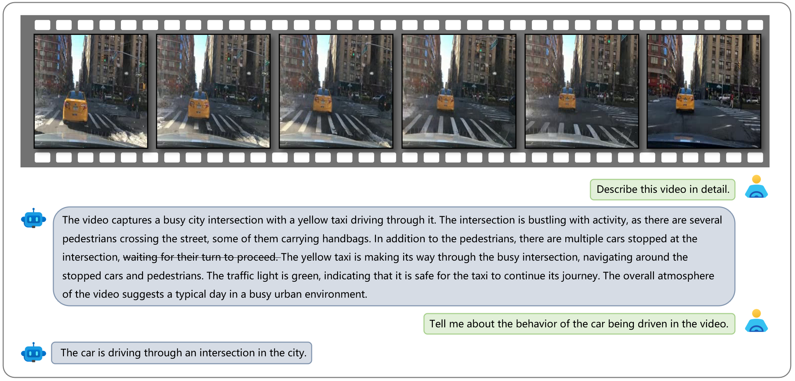

Abstract
The quest for fully autonomous vehicles (AVs) capable of navigating complex real-world scenarios with human-like understanding and responsiveness necessitates the convergence of advancements in artificial intelligence, robotics, and automotive engineering. In this paper, we introduce Dolphins, a novel vision language model architected to imbibe human-like driving abilities. Dolphins is adept at processing multimodal inputs comprising video (or image) data, text instructions, and historical control signals to generate informed outputs corresponding to the provided instructions. Building upon the open-sourced pretrained Vision Language Model, OpenFlamingo, we tailored Dolphins to the driving domain by constructing driving-specific instruction data and conducting instruction tuning. Through the utilization of the BDD-X dataset, we designed and consolidated four distinct AV tasks into Dolphins to foster a holistic understanding of intricate driving scenarios. The distinctive features of Dolphins are delineated into two primary dimensions: (1) the ability to provide a comprehensive understanding of complex and long-tailed open-world driving scenarios and solve a spectrum of AV tasks, and (2) the emergence of human-like capabilities including gradient-free rapid learning and adaptation (in-context learning), reflection and error recovery, and interpretability. Through an extensive evaluation on the BDD-X dataset, Dolphins demonstrates an emergent ability to generalize across a variety of AV tasks, enabling it to proffer fine-grained scene understanding including but not limited to various road agent attributes (e.g., a silver car with right turn light on), behaviors (e.g., yielding to pedestrians crossing the street), environmental conditions (e.g., snowy day on a busy road in a city), and to forge robust planning strategies. Moreover, Dolphins's in-context learning ability, reflection and error recovery mechanisms, and interactive conversational interface foster a robust, reliable, and user-trustworthy autonomous driving system, shedding lights on what future AVs can achieve. Through Dolphins, we envisage a substantial stride towards bridging the understanding gap between humans and autonomous driving systems, propelling the AV domain closer to realizing fully autonomous vehicles.
Perception (Scenario Understanding)
An example showcasing Dolphins’s capability in scenario understanding. The video features an ego car driving in a tunnel. Dolphins can identify the environment in which the ego car is situated and accurately determine the color of the front vehicle as well as infer the current time.
Perception (Scenario Understanding)
An example showcasing Dolphins’s capability in scenario understanding. The video features an ego car driving on a snowy street. Dolphins can identify the environment in which the ego car is situated, the presence of the traffic light, and accurately determine the color of the passing vehicle.
Perception (Behavior Understanding)
An example showcasing Dolphins’s capability in scenario understanding and behavior understanding. The video features an ego car stopping at an intersection on a rainy day. Dolphins comprehensively describes the environment in which the ego car is situated, the behavior of the ego car, and can infer the reasons for its behavior.

Perception (Behavior Understanding)
An example showcasing Dolphins’s capability in scenario understanding and behavior understanding. The video features an ego car making a right turn. Dolphins can identify these contents. Words means hallucination.
Perception (Behavior Understanding)
An example showcasing Dolphins’s capability in scenario understanding and behavior understanding. The video shows an ego car following a taxi and going through an intersection. Words means hallucination.

Perception (Behavior Understanding)
An example showcasing Dolphins’s capability in scenario understanding and behavior understanding. The video shows an ego car driving slowly on a busy road at night. Dolphins can identify the ego car traveling at a slow speed and infer that the reason is that the speed of the vehicle ahead is restricting the ego car’s speed.
Prediction
An example showcasing Dolphins’s capability in scenario understanding. The video features an ego car driving in a tunnel. Dolphins can identify the environment in which the ego car is situated and accurately determine the color of the front vehicle as well as infer the current time.

Prediction
An example showcasing Dolphins’s capability in scenario understanding. The video features an ego car driving on a snowy street. Dolphins can identify the environment in which the ego car is situated, the presence of the traffic light, and accurately determine the color of the passing vehicle.

Planning
An example showcasing Dolphins’s capability in scenario understanding. The video features an ego car driving in a tunnel. Dolphins can identify the environment in which the ego car is situated and accurately determine the color of the front vehicle as well as infer the current time.

Planning
An example showcasing Dolphins’s capability in scenario understanding. The video features an ego car driving on a snowy street. Dolphins can identify the environment in which the ego car is situated, the presence of the traffic light, and accurately determine the color of the passing vehicle.

Rapid Learning and Adaptation (In-context Learning)
three examples show our model enables rapid adaptation to unseen instructions through in-context learning. In the first two examples, Dolphins learns to play the role of the driver through in-context examples and can accurately describe its behavior, despite not having been trained on such instructions. The third example shows that Dolphins can learn common sense from in-context examples, such as not being able to judge the current time based on the light when inside a tunnel.

BibTeX
@misc{bitton2023visitbench,
title={VisIT-Bench: A Benchmark for Vision-Language Instruction Following Inspired by Real-World Use},
author={Yonatan Bitton and Hritik Bansal and Jack Hessel and Rulin Shao and Wanrong Zhu and Anas Awadalla and Josh Gardner and Rohan Taori and Ludwig Schimdt},
year={2023},
eprint={2308.06595},
archivePrefix={arXiv},
primaryClass={cs.CL}
}